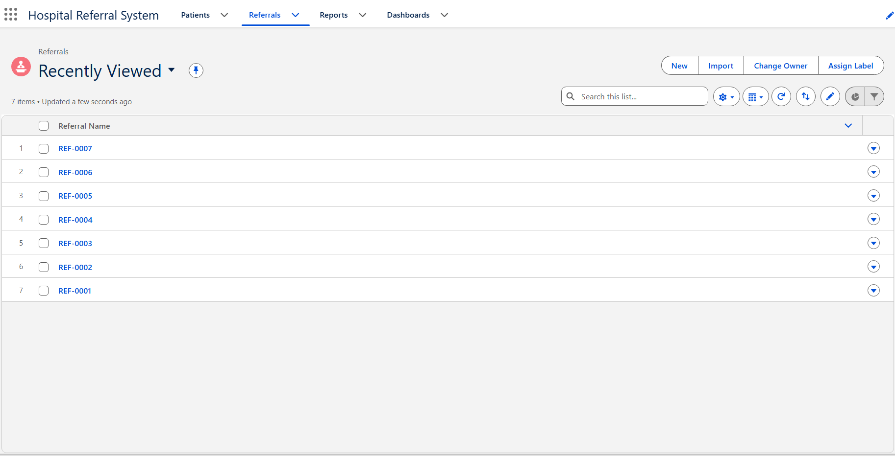
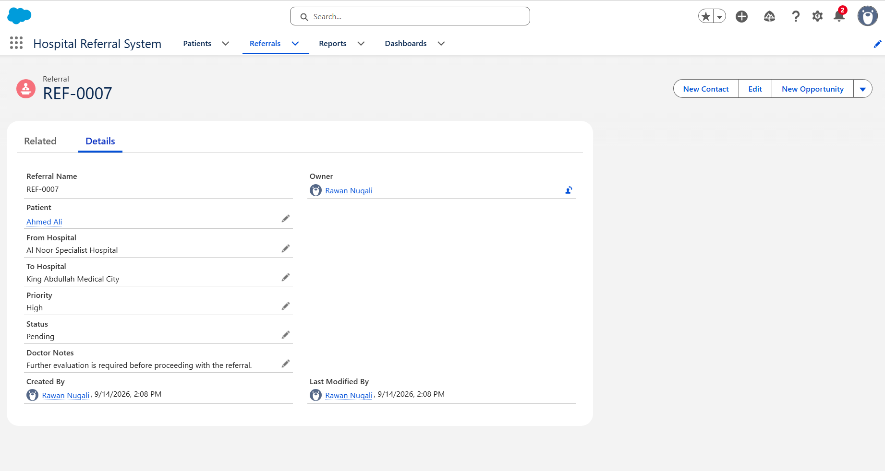

SALESFORCE CLOUD PROJECT
Cloud-Based Hospital Referral System
A cloud-based healthcare referral management prototype developed on the Salesforce Platform. The system organizes patient information, manages hospital referrals, tracks referral priority and status, and provides reports and dashboard visualizations for monitoring referral activity.
Key Features
Patient Management
Stores and manages patient information including age, gender, phone number, and current hospital.
Referral Management
Creates hospital referral records linked to patients using Salesforce lookup relationships.
Priority & Status Tracking
Tracks referral priority levels and workflow status from submission through completion.
Reports & Dashboard
Visualizes referral activity by priority, status, and destination hospital using Salesforce reports and dashboards.
System Showcase
Hospital Referral Dashboard
Dashboard providing an overview of total referrals and their distribution by priority, status, and destination hospital.

Referral Records
Centralized referral records showing patient referrals managed within the Salesforce application.

Referral Details
Detailed referral view containing the linked patient, referring and destination hospitals, priority, status, and doctor's notes.
